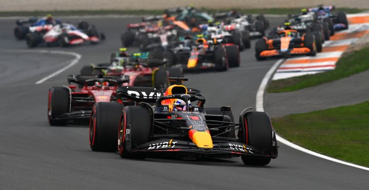
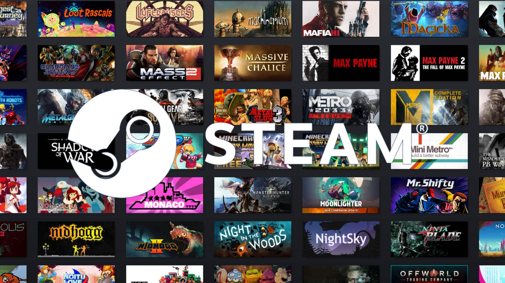
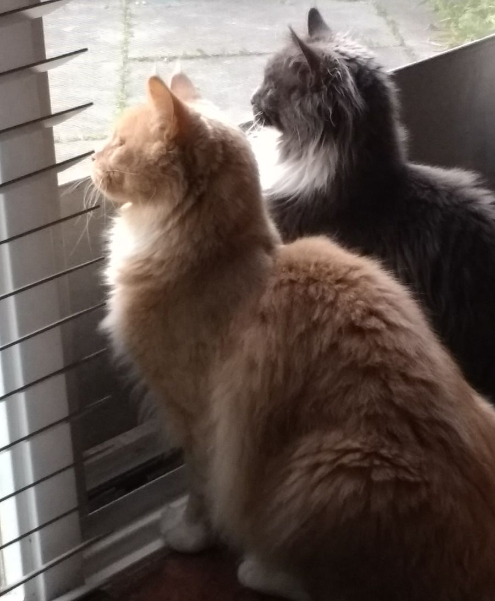

Over Tino
Dit is Tino hij is 16 jaar jong en woont in Spijkenisse hierdoor is zijn reistijd maar 10 minutjes.
Tino zijn hobbies zijn Formule 1 kijken en sporten,
Formule 1 kijkt hij altijd maar hij is niet per se fan
van een team maar heeft wel coureurs waar hij fan van is zoals:
Max Verstappen en Sebastiaan Vettel.

Ook gamed Tino aardig wat hij gebruikt hiervoor het platform Steam
(een online Gamebibliotheek waar je je spellen kan kopen) op dit platform speelt hij meestal FiveM,
F1 en nog andere spellen. Op FiveM heeft hij nu 1090 uur in zitten

Verder vindt hij het ook leuk om te programmeren hij had hier ook al wat kennis van voordat hij aan deze opleiding
is begonnen hij is daarom ook naar deze opleiding gegaan om daar meer over programmeren te leren.
Tino luistert ook heel veel naar muziek zijn Favoriete genre is House Music.

Tino heeft ook nog 2 huisdieren namelijk 2 katten.